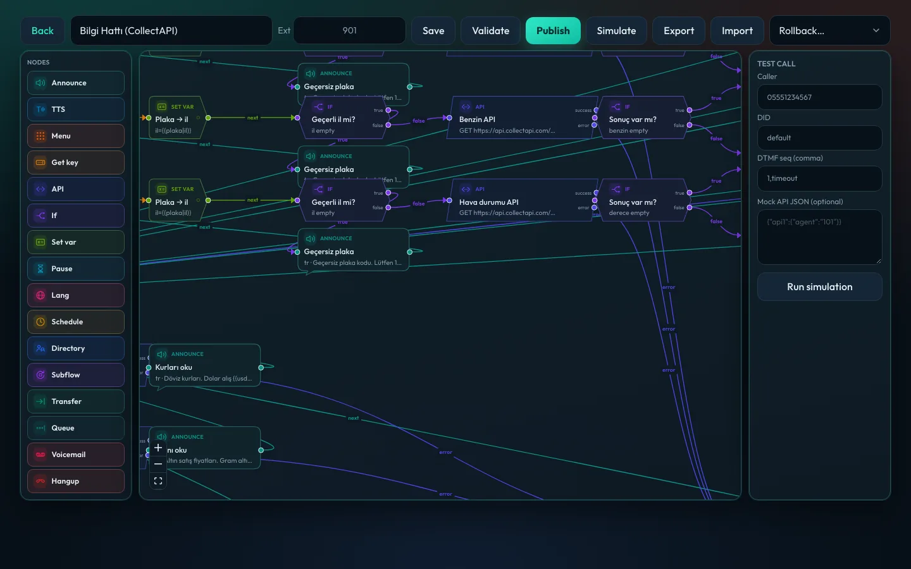
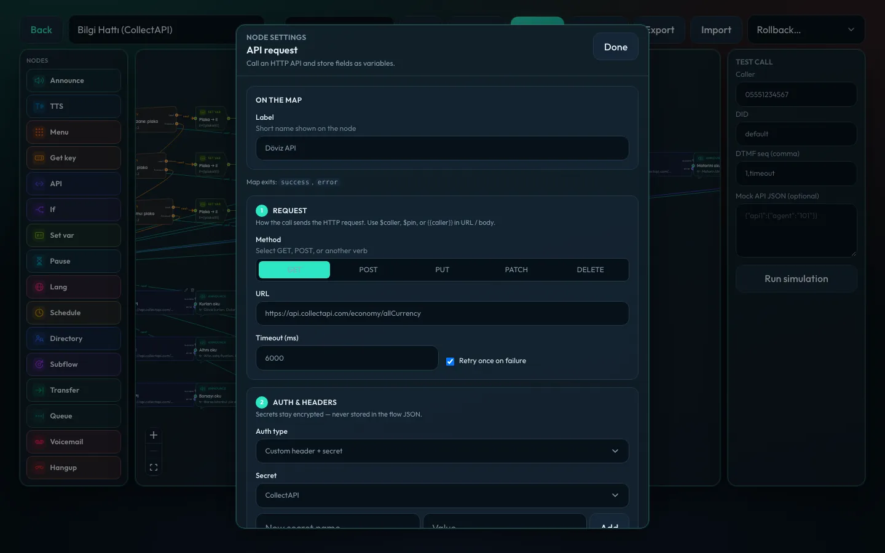
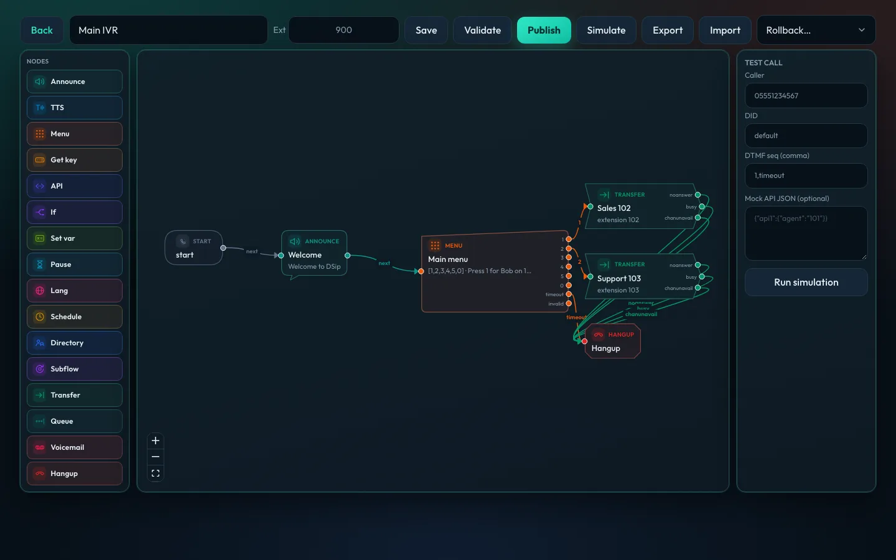
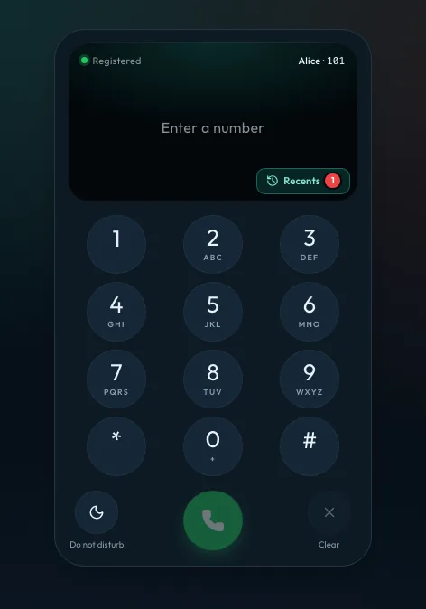
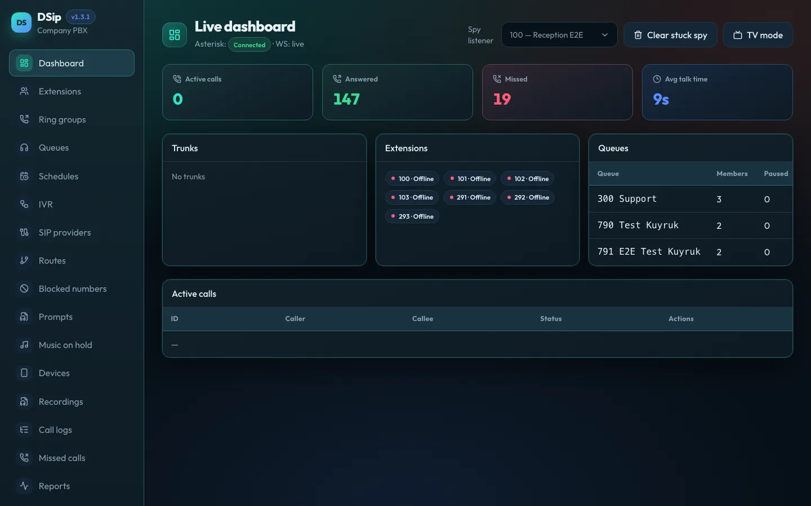

Extensions, queues, a visual IVR designer with live API lookups and neural
speech, a browser softphone, call logs and a live dashboard — the media
plane and the control plane on your own server.
Database, recordings and settings persist on /data
Open source under the MIT License
Panel in English and Turkish, light and dark theme
A call reaches the PBX, the IVR fetches live data over an API and reads it out,
and the queue rings the free agent — the busy one is skipped.
Asterisk 22 PJSIP · ARI · AMI
WebRTC SIP.js over WSS
Node 24 Fastify · Drizzle
PostgreSQL 17embedded
React 19 Vite · TanStack
TTS Edge Neural · EMA
Everything a ~20-desk office needs
One panel for the whole phone system
No hosted black box and no add-on modules. Everything below ships in the same image
and is managed from the same admin panel.
Extensions
CSV import and export, outbound caller ID, call permissions (local / mobile / 444 / international), no-answer · busy · unavailable forwarding, voicemail to email, server-side DND with a switch or *78/*79, and live presence everywhere. 112 is always allowed.
Queues & ring groups
Six Asterisk strategies, penalty and wrap-up, busy agents skipped. Position and hold-time announcements with a per-queue language and voice model, hold-music class, overflow on timeout / full / empty, and “press 1 to keep your place” callback.
Visual IVR designer
Seventeen node types on a map, each with its own shape: menu, get key, API, if, set variable, pause, language, schedule, directory, subflow, transfer, queue, voicemail and more. Validate, simulate, publish and roll back versions.
Neural speech, sentence by sentence
Edge Neural voices in English and Turkish, plus EMA, an offline Turkish neural model. Long text is split into sentences and synthesized while the previous one plays, so a read-out starts in about a second. Results are cached.
Schedules & holidays
Weekly ranges with a lunch status, a national-holiday pack and company days, manual override (auto / open / closed) and a separate destination per status. Europe/Istanbul by default.
Trunks & routes
Several SIP providers with failover, inbound DID and caller-pattern routes, outbound prefixes, blacklist, anonymous-call block, country allowlist, daily and monthly spend limits, and last-dial callback.
Call logs & recordings
Click a call to open its timeline right below the row: every IVR step, key pressed, wait and talk time, queue, MOS / jitter / loss. Recording with a privacy (KVKK) announcement, retention, Opus convert, NAS / SFTP archive.
Security built in
Admin 2FA (TOTP), IP allowlists for admin, portal and SIP, login-flood ban, a SIP guard that records brute-force scanners from Asterisk security events, firewall export, and Let’s Encrypt certificates issued from Settings.
Integrations
Webhooks for ringing, answered, ended and missed calls; REST API with API keys for click-to-call, CDR and recordings; an embeddable website call widget; daily and monthly email reports.
IVR designer
Draw the call. Fetch live data. Say it.
The demo “Main line” that ships with MunaSIP: a welcome, a menu to sales and the support
queue, and live exchange rates fetched from an HTTP API — with a “one moment” prompt
before the lookup.
Variables everywhere. Digits from Get key, values from Set variable or API mappings expand as $name or {{name}} in prompts and URLs.
Filters for speech.{{phone|digits}} reads a number digit by digit, {{temp|round}} rounds, {{price|amount}} speaks a price in words, {{city|ascii}} makes a value URL-safe.
API node. GET / POST / PUT / PATCH / DELETE, secrets stored encrypted (never in the flow), JSON path mappings, timeout, retry and a test request.
Type-ahead keys. Callers can press a key during a prompt; the digit is buffered and the speech stops.
Safe to change. Validate before publishing, simulate with sample keys and mock API data, roll back to any version.

Extension 902 — every node type has its own shape and color.

API request settings: method, URL, retry, auth and JSON mappings.

Transfers branch on busy, no answer and unavailable.

Softphone & portal
A phone in the browser, a portal for every desk
Each extension signs in to its own portal and gets a full softphone — no app to install.
Desk phones register to the same PBX.
WebRTC over WSS through the API’s own proxy; recovers from page reloads, several tabs and network drops.
Phone-like design with the call on the screen, recents behind a button, DND and DTMF that never drops quick key presses — follows the light and dark theme.
Stays up while you work: move between portal pages without dropping the call; a mini phone at the bottom of the menu answers, mutes and hangs up.
One password per extension for the portal and SIP — set by the admin or generated.
Portal: directory with live presence, my calls, my recordings, voicemail, forwarding and DND.
Desk phones: Yealink / Fanvil / Grandstream MAC provisioning and QR setup for mobile softphones.
Admin panel
Day-two operations, in the same place
Real screens from a running system.
munasip.example.com

Install
One container. Pull and run.
Asterisk, the API, the panel, PostgreSQL and the TTS engines live in a single image,
published to GitHub Container Registry on every release. Deploys pull it in about a
minute instead of building.
Point a hostname at the server and open TCP 80/443 and UDP 10000–10100 (RTP).
Run the image with a volume on /data.
Sign in, set the hostname in Settings and issue the certificate.
Recommended: 2 vCPU and 4 GB RAM or more (neural speech runs on the PBX’s CPU). Expose SIP 5060 only if desk phones or trunks need it.
bash
# prebuilt image (linux/amd64)
docker run -d --name munasip --restart unless-stopped \
-p 3000:3000 -p 10000-10100:10000-10100/udp \
-v munasip-data:/data \
-e EXTERNAL_IP=203.0.113.10 \
-e PUBLIC_HOST=pbx.example.com \
ghcr.io/munasip/munasip:latest
# update: data stays in the munasip-data volume
docker pull ghcr.io/munasip/munasip:latest